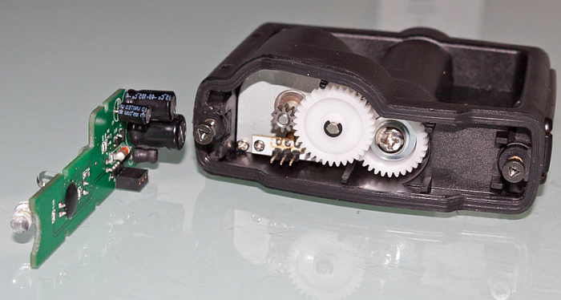
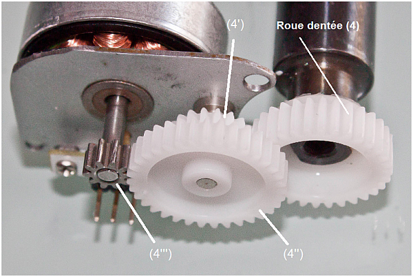
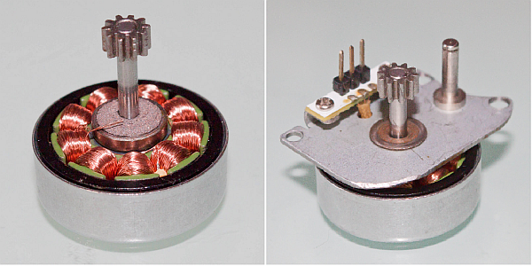

Constitution interne de la pédale lumineuse

Vue de l'intérieure de la pédale lumineuse
- Le corps (1), l'axe (2) et les roulements avant et arrière (3) transmettent L'énergie mécanique fournie par le cycliste au pédalier du vélo. L'axe tournant par rapport au corps (restant en position fixe durant le pédalage) entraîne la roue dentée (4) du train d'engrenage qui prélève une infime partie de cette énergie, pour la production de l'énergie électrique.

Corps (1) + axe (2) + roulement (3) + roue dentée (4) du train d'engrenage
- Le train d'engrenage (5), constitué de 4 roues dentées, adapte la vitesse de rotation et le couple fournis par la roue dentée (4) pour la génératrice (6)

train d'engrenage (5)
- La génératrice (6) convertit l'énergie cinétique fournie par le train d'engrenage (5) en énergie électrique.

génératrice (6)
- La carte électronique (7) prend en charge l'énergie électrique produite par la génératrice (6) pour générer des flash lumineux grâce au calculateur et aux leds (8), et stocker le surplus.

Created with the Personal Edition of HelpNDoc: Free Web Help generator